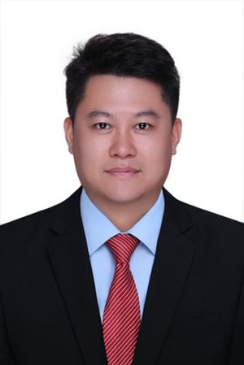

ThaLab地中海贫血本科生科研团队
ThaLab Undergraduate Research Team on Thalassemia · Guangxi Medical University

指导老师
侯伟 医学博士 · 副教授
广西地中海贫血防治重点实验室副主任，广西医学会罕见病学分会第一届委员会常务委员兼秘书，长期从事地中海贫血的防治研究工作及产前筛查和诊断工作。参与省部级、国家级课题 8 项，指导我校本科生开展基础科研科普工作十余项。
参与国家自然科学基金项目（No. 82260620、No. 81760561）；2026 年 5 月受邀在基础医学院「基础医学＋X」多学科集体备课活动作《地中海贫血与染色体畸变临床案例》专题分享。
简介摘自团队 2025 年招新海报；补充信息来自广西医科大学基础医学院官网、广西医科大学学报论文基金标注。
研究方向词云
成果展览
团队风采
通知文件
实用工具
地贫科研团队WorkBuddy 专家包
Thalassemia Research Team · 9 名成员 + 7 个技能
面向地贫与血液遗传病研究的协作团队。首次使用引导建档，自动在工作目录生成项目结构；文献、实验设计、数据分析、标书、配图、环境运维各有专人。成员可增删改，团队名与称呼都能自定义。
两种装法：① 下载 zip，解压后放进技能目录；② 复制上面的仓库路径，直接丢给智能体说「把这个仓库装成技能」，它自己会装。
下载走国内 COS 通道，比从境外站点取快一个量级；仓库里是源码，模型等大文件只在压缩包里。
下载走国内 COS 通道，比从境外站点取快一个量级；仓库里是源码，模型等大文件只在压缩包里。
统计概览
团队情况总览